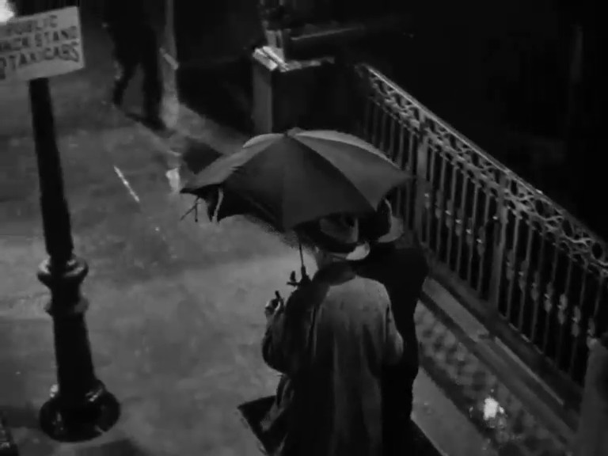

Scarlet Street, frame at 6:07
Fritz Lang · 1945 · Film, black and white (frame)
Free to use
Lang was refused permission to film in Greenwich Village, so Universal built the streets on its backlot. Lang and the writer Dudley Nichols bought the rights to the story cheaply from Paramount and never watched Jean Renoir's 1931 version, so as not to copy it. On 4 January 1946 the New York State Censor Board banned the film outright, and Milwaukee and Atlanta followed.